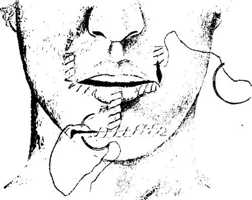
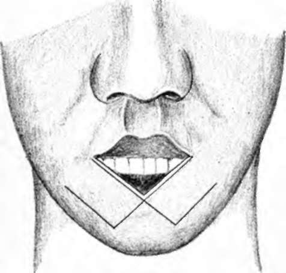
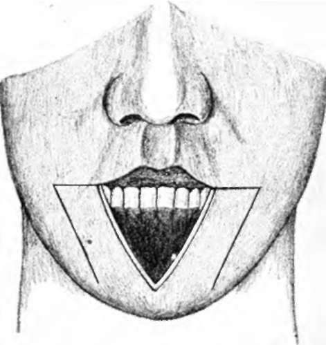
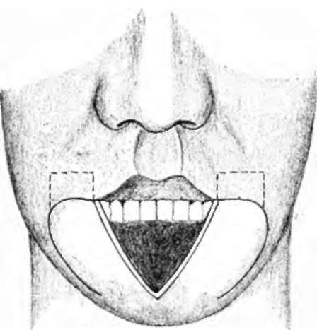
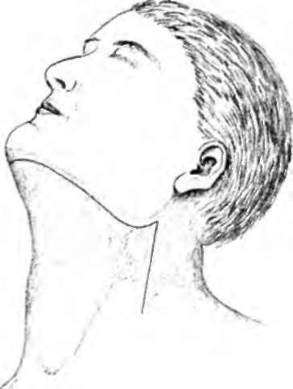
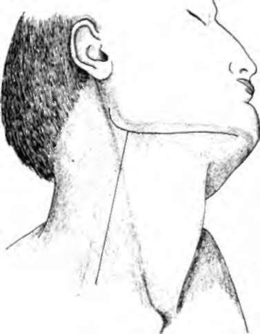

Treatment to Tumors of the Lips. Part 3
Description
This section is from the book "Skin Cancer", by Henry H. Hazen, A.B., M.D.. Also available from Amazon: Skin Cancer.
Treatment to Tumors of the Lips. Part 3
The avoidance of shock, hemorrhage, and infection is especially necessary in these cases. A preliminary dose of morphine and atropine, a carefully given anesthetic, a minimum of trauma from retraction and throat dissection, will lessen the shock. The exclusion of nervous stimuli, according to Crile's principle of anoci-associa-tion, is an important refinement in preventing shock in weak or nervous individuals. The most painstaking hemostasis is desirable, not only to avoid loss of blood, but so that structures may be more easily recognized during the operation.
The importance of making the operation upon the neck independent of that on the lip, to avoid infection, has been mentioned. When Wharton's duct is divided for removal of the submaxillary salivary gland, there is always a slight risk of infection from the mouth.
Fig. 88.-At the Mayo clinic the deformity caused by the excision of a cancer of the lip is remedied as shown above. (Redrawn after Boeckman).
To avoid dissemination, the carcinomatous tissue should be handled carefully and not clamped or squeezed. The dissection must go beyond the tissues known to be infected; incomplete operations are worse than no operations. Inoperable cases are those in which the cancer has left the glands and invaded the deep planes of the neck. The skin may be adherent or encrusted over the submaxillary glands, and still the case be perfectly operable.
Beckman, writing from the Mayo clinic, says that their preference in cases where it is necessary to carry the dissection down to the clavicle is to do the operation in two stages. The neck is done first, and the primary growth on the lips one week later. An incision is made about three-quarters of an inch below the ramus of the jaw and extending through skin and platysma from one sternomas-toid to the other. The low incision avoids the small branch of the facial artery, "which innervates the muscles about the angle of the mouth. All of the fascia and fat, including the submaxillary salivary glands, are removed, and thus both submaxillary triangles and the submental triangle are emptied. The glands from the submaxillary triangle on the side of the tumor are examined at once, and, if they are found to be carcinomatous, the incision is carried down to the clavicle on that side. All glands, including the anterior and posterior jugular groups on this side of the neck, are removed by block dissection. If the glands in the submaxillary region on the side of the neck opposite the tumor be also involved, nothing short of a block dissection of both sides of the neck is permissible. There were ninety-nine patients who had a primary radical operation done for cancer of the lower lip-that is, both the glands of the neck and the growth excised. Cures were estimated at 83.8 percent; thirty-nine of these patients had gone three years since operation and four over five years. In eighteen cases out of the ninety-five, carcinoma was demonstrated in the glands by the microscope at the time of operation. Of these nine or 50 percent were among the cured cases. In a group where some previous operation had been done upon the lip, or it had been treated with a caustic paste, and a late radical operation was performed, the cures were 70 percent. Of this latter group showing glandular involvement, 33 1/3 percent were cured. Crile strongly urges the neck operation as a routine in all cases of cancer of the lip. Where there are no palpable glands, he makes the small incision as illustrated in Fig. 92. Through this the regional lymphatic-bearing tissue is removed by block dissection. This includes both fat and glands of the submental and submaxillary region on the side of the growth. The submaxillary salivary gland is not removed if there is certainly no involvement of the regional lymphatics. In cases with definitely involved enlarged lymphatic glands the entire lymphatic-bearing tissue of that side of the neck is removed. The carotid artery is exposed as low down as possible by an intramuscular separation of the sternomastoid muscle, and temporary closure of this artery is effected. The complete skin incision (Fig. 93) is then made (including platysma) and the flaps extensively reflected. The sternomastoid is divided, the external and internal jugular veins are secured, doubly tied, and divided at the base of the neck. The dissection is then carried from below upward (Figs. 94, 95) into the deep planes of the neck, behind the lymph glands. All the fat, fascia, muscles, veins, and connective tissue are carried upward. The dissection becomes easy when following the deep plane. The entire block of tissue is finally divided above (Fig. 96). It includes fascia, fat, submaxillary, salivary and part of the parotid glands, sternomastoid, omohyoid, part of the stylolingoid muscles, the entire venous system, and all the lymphatic vessels and glands in this region. The key to the situation in the radical block excision of the entire side of the neck lies in the removal of the internal jugular vein. Crile has done this radical operation on both sides of the neck in the same individual in two operations, with an interval of three months between operations. Both the internal and external jugulars were removed on both sides.
Fig. 89.-Figs. 89, 90, and 91 illustrate various plastic operations for repairing defects after removal of cancer of the lip. (Redrawn after Tilton).
Fig. 90.-See Fig. 89.
Fig. 91.-See Fig. 89.
Crile's radical block dissection has shown itself to be four times more effective than his former procedures.
Bloodgood urges surgeons to study their cases of cancer of the lower lip in which the glands show metastasis. His cases showed only 50 percent of five-year cures. He does not think that the operation on glands has been complete enough, and believes that a portion of the parotid and the submaxillary salivary glands should be included in the block. The subparotid lymph glands have been left behind in recent operations, for he feels that it is impossible to completely remove these glands without the ligation and excision of the upper portion of the internal jugular behind which they lie. The operation for recurrent cancer of the lip reduces the probability of a cure at least 42 percent.
Fig. 92.-When the glands are not palpably Involved, this Incision should be made. (Redrawn after Crile).
In cases of cancer of the upper lip the simple local operation can be more often done, because the majority of cancers here are of the basal-celled variety. When a prickle-celled tumor is, however, situated on the upper lip, the same operation is indicated as for cancer of the lower lip.
Conclusions
In conclusion, it must be said that cancer of the lip is a serious and frequent malady, and that it may develop within two months after the onset of an apparently simple malady. Benign and precancerous lesions occurring here should be excised early and histologically examined to make sure of their character. None of the lesions should be treated the way skin lesions may be treated -that is, by caustics, cautery, carbon-dioxide snow, x-ray, radium, etc. The rarer basal-celled tumors and the malignant warts do not require more than a careful local excision.
All squamous-celled cancers should have not only local removal, but also removal of the glands of the neck.
The local operation can readily be done with local anesthesia, and under proper conditions the radical operation can be performed in the same way.
Fig. 93.-When the glands are clearly involved, this incision should be made. (Redrawn after Crile).
The slight tendency for the growth to go beyond the cervical lymph glands and the accessibility of these glands should encourage more radical and painstaking operations.
Where the submaxillary glands are known to be definitely involved, the entire lymphatic chain on that side of the neck should be removed by block dissection, including the internal jugular vein.
Continue to:
Tags
bookdome.com, books, online, free, old, antique, new, read, browse, download